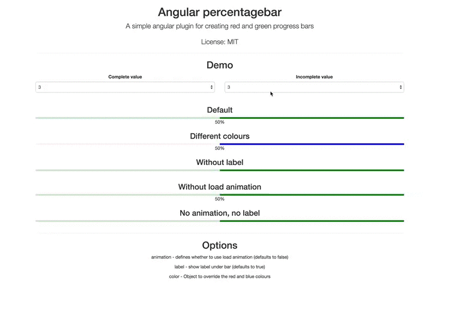

<br>
<br>
<br>
<div class="container">
    <h1>Angular percentagebar</h1>
    <p class="lead"> A simple angular plugin for creating simple green and red progress bars </p>
    <h2> Features </h2>
    <ul>
        <li>Simple material design inspired UI</li>
    </ul>
    <h2> Demo </h2>
    <a href="http://louisbichard.github.io/angular-percentagebar/"> Click here for the live demo </a>
    <div class="row">
        <div class="col-md-6 col-md-offset-3">
            
        </div>
    </div>
</div>
